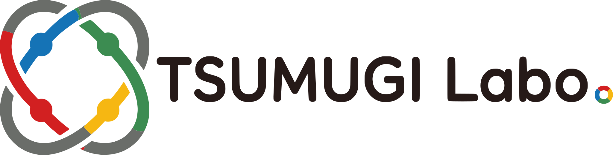

毎日の集計や転記、予約管理――「そこまで大掛かりじゃないけど、地味に手間」な作業を、Googleスプレッドシート・GAS(Google Apps Script)を中心に自動化します。
SERVICE
今の運用を大きく変えずに、面倒なところだけ楽にする――を基本方針にしています。
売上・勤怠・在庫などの集計や転記、通知メールの自動送信、フォーム連携など、日々の定型作業をGoogle Apps Scriptで自動化します。
在庫管理・勤怠管理・予約管理など、Googleスプレッドシートをデータベース代わりに使う、必要十分な規模の業務システムを構築します。
WHY TSUMUGI LABO.
金額計算や予約の二重登録防止など「絶対にミスできない処理」は、毎回同じ入力に対して同じ結果を返す仕組みのほうが向いています。GASはそうした「約束を守る」自動化が得意です。
新しい専用システムを導入するのではなく、Googleスプレッドシートという使い慣れた画面のまま、裏側の面倒な作業だけを自動化します。
事業者情報